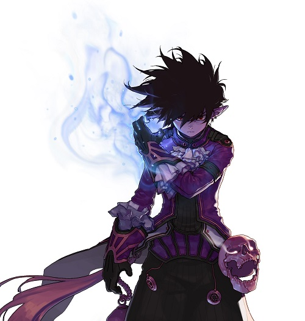
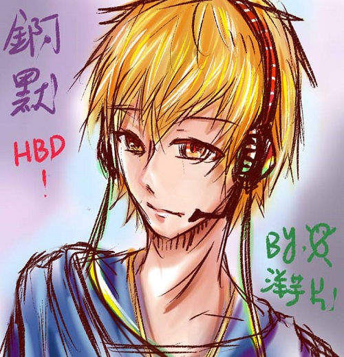
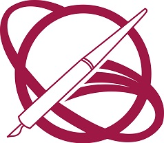

林恩頌 Adam Lin
大家好，我是就讀世新大學資訊傳播系一年級的林恩頌，今年18歲，身高是令人羨慕的180公分。目前沒什麼特別的專長，未來想要做的職業有很多，其中最大的夢想是成為遊戲實況主。患有中二病以及因長期繭居於家中而產生的邊緣症。除了學校附近外，也經常於新莊地帶出沒。
Hello everyone, my name is Adam Lin, who is a freshman in the Department of Information and Communications at Shih Hsin University. I am 18 years old and my height is enviable, I have 180 centimeters. There is no special expertise now. There are many careers want to be done in the future. But the biggest dream is to become a game YouTuber. Suffering from Eighth Grade Syndrome and Edge disease due to long-term stay in the house. In addition to nearby schools, you can often meet me in the area of Xinzhuang.
經驗
闇黑魔術使
自出生的那一刻起，成為闇黑魔術使的命運就已註定。寄宿在我右手臂的暗影魂魄，多年來不斷地呼喚著我，雖然我試著壓抑著它的力量，但終究失敗了。它漸漸地侵蝕我的手臂，為了不讓它吞噬掉我的靈魂，我踏上了旅程，尋找能夠控制這強大力量的方法。經過了5年，終於在位於凡德瓦王國境內，艾瑪帕森林的無限之境中，找到了知曉這個詛咒的神祕智者。他用了2年的時間，傳授給我一切他所會的魔法，並且在最後，為我的右手臂施展了封印術，我才能對這強大的力量加以控制。為何那位智者沒有一開始就將封印術傳授給我呢?臨走前他對我說，因為他不想讓我一輩子逃避這個力量，封印術終究還是有失效的一天，但是如果去接受了它，並且學會控制，那這份力量就能為我所用，並且還能夠幫助更多人。所以，為了報答這位智者的恩情，我決定用從它所學來的魔法，幫助更多人，這也是那位智者的心願。因此我成為了到處斬妖除魔、為民除害的闇黑魔術使。
遊戲實況主
國中二年級時，加入了Dark moon實況團，與團員們開始一起進行遊戲實況的拍攝。至今已上傳200部影片以上，訂閱數超過100人。
學歷
世新大學
新北市立新莊高中
抱著試試看的心情跑進了特色班，結果成為全班唯一就讀一類科系的學生；在這裡的新莊團契遇到了一輩子的朋友。
Skills
- Mobile-First, Responsive Design
- Cross Browser Testing & Debugging
- Cross Functional Teams
- Agile Development & Scrum
興趣
汝，欲瞭吾之好?那你準備好了嗎?


天地萬物，唯宅乃吾之所好，其餘萬般皆視如糞土。吾生命所追求的究極之物，宅也!
Awards & Certifications
- Google Analytics Certified Developer
- Mobile Web Specialist - Google Certification
- 1st Place - University of Colorado Boulder - Emerging Tech Competition 2009
- 1st Place - University of Colorado Boulder - Adobe Creative Jam 2008 (UI Design Category)
- 2nd Place - University of Colorado Boulder - Emerging Tech Competition 2008
- 1st Place - James Buchanan High School - Hackathon 2006
- 3rd Place - James Buchanan High School - Hackathon 2005